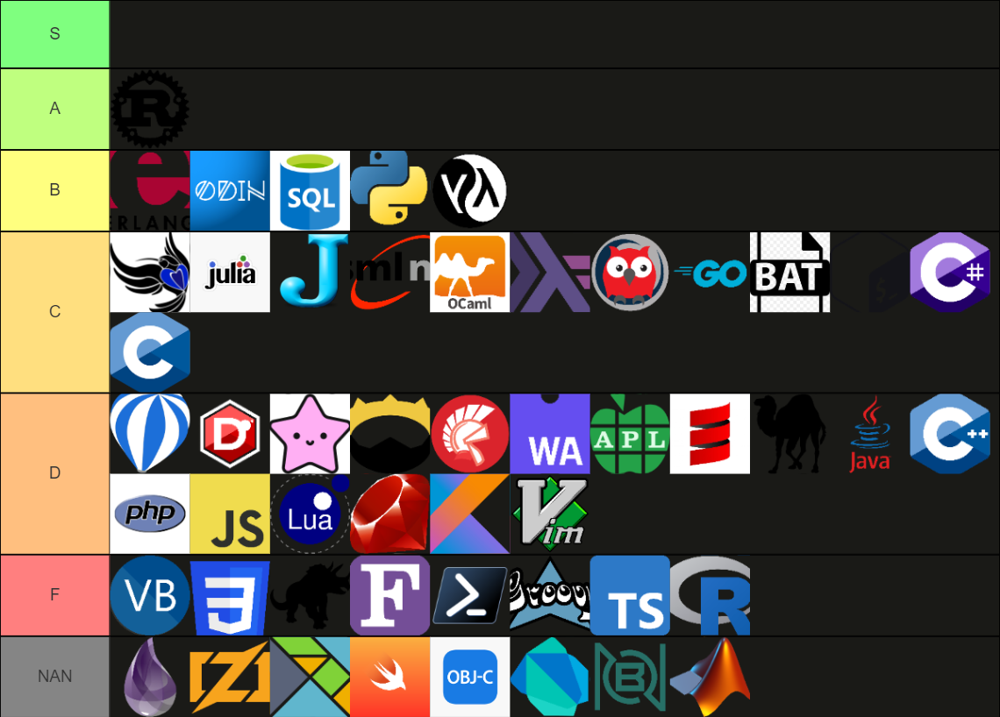

Over the years I have used a plethora of programming languages. I've currently learned as many programming languages as I am years old, and tried even more.

Most people find their home after a few years, but I couldn't find one. The reason is that I've seen many good ways of tacking certain problems, but no language designer has combined the approaches into one cohesive language yet.
One principle that holds true in many disciplines is that people prefer to do what is easy. The problem is that what is that some languages make it unreasonable difficult, to have the easy solutions also be the simple solutions.
Simple: Simple is the opposite of complex. Complexity is the degree of interwovenes with other things. When people braid their hair, they are complecting their hair structure. "Something is complex" means that it is heavily intertwined with other things, or the whole described thing is heavily intertwined. Simple means that the thing is not intertwined with other things, and quite literally "straight forward".
Easy: Easy is the opposite of difficult. Something is difficult if it takes large amounts if effort to achieve it. Ease describes the amount of effort required. Something is easy if it doesn't involve effort.
For more information/detail look at Simple Made Easy by Rich Hickey
So in the following paragraphs I'll show you common problems I see in languages, and give solutions I've discovered on my own, or got inspired to by other languages I've tried.
Often when programs live for a long time, they get consecutively harder to change. This problem is partially the fault of bad programming practices [5, 6], but also partially the fault of the language it self, either not offering the required primitives, or not directing the programmers to a flexible solution.
Bad type flexibility is easily described with an example program. In this case I'll use Java as a particularly egregious example:
int someMath(int x, int y) {
x = x + y;
// ...
return x;
}
This is a horrible function from a flexibility standpoint. If we want to change the types, we have to change it in the function signature. Meaning that if we modify the last line in the function to alter the return type, we need to adjust the very first line of the program too. We have artificially increased the difficulty of performing a simple change.
It get's even worse if we want to change one of the two input parameters.
The function contains the + operation.
This is only defined on a specific subset of build-ins.
Meaning we can't alter the types to one of our own defined types easily,
because that will involve altering the function body too.
The solution: Just don't annotate types. If the language doesn't require the programmer to annotate types, the language it self makes the code way easier to change.
The next example is often more subtle and harder to spot for novices. Yet, it is even more dangerous than my first case of Type flexibility.
Let's examine the following setup:
In this case we have created two classes of functions. The faster red functions and the slower but more flexible blue functions.
Given this setup it is only natural that we will end up in a situation, where we have to call a blue function from a red function. If we want the advanced capabilities of the blue functions, we will need to convert the faster red function into a slower blue function. But then all other red function that relied on the one we just turned blue, also need to turn blue because only blue functions can call other blue functions. A chain reaction ripples through the type system.
The inverse case is also not really better. If we decide to not use a blue feature inside a blue function, because we don't need it anymore, we don't need to touch the function signature and convert the function to red. But red functions are faster. So if we want to be good programmers, we should convert this function to a red function to get a free speed up. But now we also need to check every function that called this function to check if we can also turn them red. Faced with this difficulty the programmer stops and doesn't bother anymore.
The result are slow and sluggish programs.
What I've described can be observed in different forms in different languages.
The most common occurrence of this is the async keyword found in
JavaScript, C#, and other languages of their kind.
In cases like these, programmers of functional languages feel superior and start praising their monadic type structures without realizing, that they have done the same.
The solution: Don't have blue functions. This should get handled by the language through build-ins and primitives. Not by the programmer inside their programs.
Correctness is important. I feels wrong that I even have to say this much, but in a world where language designers often just vaguely gesture into the direction of correctness and programmers often conflate it with safety, throwing both in the wind for the sake of "time to market", it feels important to say it again. Correctness is important.
"Simplicity is prerequisite for reliability" - Edsger Dijkstra
I want to have my programs compile and work. I don't want to get woken up at 3am, because I introduced a bug that impedes a costumer. I don't want to be responsible for low quality software, that crashes, freezes, and doesn't do what the user wants.
It is important that languages them selves already provide ways of checking for correctness, because they can often do it quicker and more reliable, than checks introduced by the programmers. Programmer introduced correctness checks are not easy to implement. They require a huge amount of communication and discipline. Two things programmers are notoriously bad at.
One facet of correctness is how the language deals with failures. The worst solution is to do nothing and let the program continue in an invalid state. No language actively used does this to my knowledge.
The second worst model of handling errors is to throw them.
raise and throw models of error propagation are faulty to the core,
for the same reason, global variables are a bad idea.
The programmer needs to know not only the exceptions that his function will raise,
but all the exceptions that can be thrown in all the function that they use.
int some_function() {
other_function();
}
int other_function() {
third_function();
}
int third_function() {
throw SomeException;
}
In the setup above we can clearly see what the problem is.
To understand that some_function can error,
the programmer must know that other_function calls third_function,
and under what circumstances third_function can fail.
This hierarchy only has 3 levels, but given the size of code bases, this seems a laughable small example and not even close in complexity, to real code. Throwing exception is a bad idea. Always.
The Java programmers reading this will already have jumped up and exclaimed that: "Java doesn't have this problem anymore! The compiler warns you of unhandled exceptions!" First of all, this is false. Java only warns you for a certain type of missed fail states. Not all fail states. But they are onto something. Java has realized that there is an advantage of having failure information encoded into the type system.
This leads us to the now prominent paradigm in most languages for handling failure: Monads.
Monads encapsulate the possible states into a single state-object,
that the programmer is then forced to unwrap before they can use it.
This removes the problem of unknown/invisible failure conditions,
since all failure conditions are enforced by the type system.
But monads are a bad solution because of their specificity.
What would happen if we swapped a Result with a Option?
The program wouldn't compile even if the error handling could remain identical.
The most Result implementations I've seen also force you to do double pattern matching.
First for the OK/ERR case and then for what kind of error you got. [6]
The solution: Type sets.
While monads are a step in the right direction,
why shouldn't we just return sets of possible values.
Just give programmers to specify directly that the function will return
one of the members of a set. E.g { Type1, Err1, Err2 }.
This has all the advantages of monads with the advantage,
that we don't need additional language constructs to handle different monadic cases.
Option -> { T, Null }Result -> { T, Err }Either -> { T, U }Programmers are often in the situation where the language provided type system
is not enough to express the required preconditions.
In such cases the default escape patch by many languages is the assert statement.
Asserts check during runtime if the required invariants hold. This is maybe acceptable in interpreted languages that don't have a compile step. But it becomes an undesirable antipattern in compiled languages. Yet, we need a way of expressing increasingly complex preconditions inside our programs, without having type systems that require a PHD to understand.
The solution: Constraint type sets. I already introduced the notion of a type set while talking about error handling. There is nothing that prevents us of adding additional information about the members into the set.
This could be done through a where clause or something similar.
One problem that plagues many languages that are not whitespace significant, is the increasing amount of required indenting. Let's look at Java/C# for a possible worst case:
class MyClass {
int my_function() {
// function content...
}
}
This type of indentation requires 2 levels of indentation
before the programmer even starts to write any productive code.
Let's throw in a for loop or two and an if statement for good measure,
and you already hit the magical "for levels of indentation" that should be the maximum.
Anything beyond that just is unreasonably hard to read.
Anyone who had to work in a deeply nested JSON can attest to that.
We need a way of doing name spacing and expressing control structure without increasing the levels of indent to an unreasonable level.
The solution: Files as namespaces and method chaining syntax support.
For this solution I've taken a page out of Pythons book.
There files are treated as namespaces already.
So we can save one level of indent from that already.
We can also enable the use of the object.method() syntax
if we just make the generic self explicit:
struct Integer {...}
Integer inc(&Integer x) {
return x + 1;
}
Integer(1).inc() // == 2
By enabling dot operations on structs we have also unlocked method chaining. Method chaining on iterators has the advantage that even more complex filters and maps don't increase the indent level and can be read from top to bottom. Those approaches combine to result in more left leaning code.
But indent isn't everything there is to readability.
We can all agree that Integer(1).add(Integer(2)).mul(Integer(3)) is harder to read than 1 + 2 * 3.
But at the same time StructOne + StructOne is more ambiguous in languages,
that allow you operator overloading of primitive operators.
As far as I am concerned, parametric polymorphism as found in Java is the devil
and any code base that uses it should be burned.
// definition
class MyClass {
void my_fun(MyClass x) {...}
void my_fun(OtherClass x) {...}
}
// calling
{
myObj.my_fun(someObj) // what function is called?
}
This type of overloading that allows objects of different interfaces to be passed into the function with the same name only leads to confusion.
Another problem of readability is how most Rust and Cpp code reads to me:
<<{::[]>:}:<>:{[]]:<<:}:::{>>}}>>:]:::<::>
When I want to read programs I want to know what the program does.
Having half my screen filled with just noise is as irritating as whitespace.
The other extreme from Rust would be something like APL or BQN.
Having Conway's Game of Life as a one liner is cool,
but unreadable for most programmers.
life ← {⊃1 ⍵ ∨.∧ 3 4 = +/ +⌿ ¯1 0 1 ∘.⊖ ¯1 0 1 ⌽¨ ⊂⍵}
We are used to the information density that we encounter in the rest of our lives. Hence an ergonomic programming language should mirror that information density to the best of it's ability. Maybe the increased use of glyphs in communication will lead us to increase the information density in programming languages one day, but for now this is not the case.
The solution: Avoid operator overloading and focus on a minimal set of glyphs.
While parametric overloading can become an antipattern, it does so under the condition that the accepted input adheres to different interfaces, or the function body exhibits different characteristics. I've never heard programmers complain about OCamls automatic parametrization of functions. So overloading should be allowed and encouraged while the symbols must maintain their syntactic implications.
As an example consider addition.
The + operator that we know from math classes takes two different values and returns a third one
that represents a sum of some sort.
Meaning every implementation of the + operator should adhere to these guidelines.
Again, people get confused by unexpected behavior.
Element wise addition of vectors using + seems normal
and expected even to students learning about them for the first time.
Semantic shadowing on the other hand is always evil. Never do it!
The semantic density of our programs can be brought by this
closer to what we would expect from a text message.
result = value |> function |> function reads better than result = function(function(value)).
"How many braces am I deep" should never be asked by programmers.
We can alleviate some of that if we would adopt more glyph combinations in our languages.
Using the magic of ligatures, we can even include more complicated glyphs
that still read in ASCII.
Vertical performance describes how far we can scale using a single machine. I'm going even further and will use the term here as "how far you can scale on a single core".
Often people suppose a false dichotomy between effort for programmers, reduced readability and maintainability. Yes, C would probably be the language one would choose to leverage a single core to the best of it's ability. But why C and not Assembler? The reason I've heard over the years is the direct and unambiguous mapping from C to Assembler while providing the comfort of a higher level language.
I'd like to introject that C is incredibly poorly defined for a programming language. This means if we had a programming language that would specify in completeness how it handles the transformation and is as honest as possible, that language would be more desirable than C to do single core programming.
Since C is poorly defined [10], the compiler can't do as many aggressive optimizations as it could. This is bad, since this means the programmer has to do those optimizations manually. This is what mainly reduces the understandability of code. (Given that the programmer does avoids multiple simultaneous mutations on the same line.)
The solution: Compiling to machine code with compile time optimizations. Any interpreted language will always have overhead and not be fast enough. So machine code is a must.
The ease of scaling horizontally heavily depends on the supported abstraction model. To prevent colored functions it is important to not differentiate between single core, multi core, and multi machine execution contexts. [9]
But this clone would not bring gains, since this leaves an uncomfortable amount of complexity for the programmer to deal with. This added complexity increases the surface area for the programmer to make mistakes.
'Synchronization' is the hard part when it comes to manual parallel programming. Hence any solution should involve a way of streamlining synchronization in an performance agnostic way.
Synchronization and effective utilization over multiple computers is even harder than over multiple cores. Giving programmers the tools to do it by hand has historically worked worse than giving them a mental model and hiding complexity behind a service layer.
**The solution: **
Mental overhead is the thing that kills most of the fun for me. I want to build features, not architectures. And while there is certainly some fun to be had in Javas pursuit of implementing the most basic features in the most complicated way possible, it isn't something I want to build a multi million line code with.
There are several things that increase the cognitive load on the programmer. Some of them I've already talked about in the sections on "Readable Operations" and "Error Handling".
The goal is reducing the amount of information the programmer has to hold in his head Simultaneously. One thing I've not yet mentioned is strict immutability inside the language (from the POV of the programmer). If one can see everything inside the function definition that one needs to know about the function, a great deal of documentation reading can be skipped and the process becomes intuitive.
Building up expertise and getting intuition and then solving problems on intuition alone is not only the most fun way I know to program, but also the fastest.
Going fast is important to the dopamine circuits. Instant feedback from idea to implementation to realization is important to keep the programmer in the flow state; the most productive state. Going fast is fun.
The solution for speed and mental overhead is: As little as possible where ever one can. This includes minimal syntax, minimal semantic constructs, minimal execution overhead, minimal roadblocks, minimal tooling, minimal boilerplate, ...
Languages that embrace that philosophy more are generally more fun to work in.
In recent years we could observe the incredible achievement of our industry of promising improvements to dependency management while simultaneously managing to create worse and worse solutions for the problem.
NPM, Maven, PIP, and many others have lead to projects over relying on dependencies
that they don't understand and don't need.
This has eroded code quality at an even faster paste than it does naturally,
while also pressuring multiple maintainers to burnout with spam requests.
The solution: A good standard library and pull & freeze external source code.
One method of dependency management that was more prominent in the olden days, was just getting mailed the source code for the library. This is now even easier to do and update. We have git servers like GitHub and GitLab. This is a valid approach and most of the time easier than going through an package manager.
Additionally this has the benefit that you control the entire source code that is needed to build the application. This makes it a lot easier to set up for a new developer coming to the project.
Another observation that can be made is that languages with a richer standard library have less need to introduce external dependencies. This sadly doesn't mean that the ecosystem will be healthier. The Python community has one of the most vast standard libraries, but the community created a jungle of package managers and dependency Jenga including polyglot setups. To be fair, the natural habitat of a python.
So the standard should be as convenient to use and as powerful, that no user feels to need to download external libraries for basic applications.
The more complicated the file structure, the more difficult navigating the project becomes. Files should carry significant semantic information. Sadly there are two extremes observed in reality.
#includes that allows us to keep the code cohesive.The other problem is the content of the files is not sorted by any human metric. Most of the time they are sorted by the required scoping from the compiler.
If I open a file I don't want to read all your imports, then copy right notice, then scope declaration and finally after 500 lines I get the first implemented logic.
The solution: Parsing the entire file and the resolving symbols. Both of the problems can be (mostly) solved this way. By parsing the entire file and then evaluating it, we leave the order of declarations to the programmer.
This also solves the problem of semantic spreading
because the implementation on the compilers side will enable the programmer
to set semantic boundaries where they want.
Navigation is more or less a solved problem. The problem lies in the solutions. Everyone has their own. The LSP has a different approach than IDEA, than Emacs, than ...
The solution: Providing parsing utilities for the language inside the standard library, and implement common protocols like the language server protocol. This way most tools should be able to hook into the LSP implementation, while others can leverage the prebuild parser from the language it self.
Non of the solutions inside here are the deadly combination of difficult and complex. They are either complex and easy or difficult and simple. There is no excuse for language designers to not implement them, or similar solutions in languages intended for production use.
I have little hope of these solutions getting implemented inside mainstream languages. The compilers are often badly structured or weight down by decades of churn and dept.
The best hope is probably a new language. This is why I'm currently implementing those proposed solutions inside my own language Taipan. The problem is that this takes time.
I hope that I could give you a hint where to focus your tooling effort in the meantime, and not waste time on the right wrong problems. Everything complex and easy is the domain of langue implementers. Everything simple but difficult can be solved by tools.
Have fun programming.
| Word | English Definition | German Translation |
|---|---|---|
| Language | Any of numerous systems of precisely defined symbols and rules devised for writing programs or representing instructions and data that can be processed and executed by a computer. | Sprache |
| Code | Any system of symbols and rules for expressing information or instructions in a form usable by a computer or other digital machine for processing or transmitting information. Also: information or instructions written according to such a system. | Kode |
| Type | A set of values with a common representation scheme that a verification system treats as belonging to the same group. | Typ |
| Solution | A particular instance or method of solving or settling; an explanation, answer, or decision. & The action of breaking up or separating; dissolution; bringing to an end. | Lösung |
| Flexibility | The ability to change or be changed easily according to the situation | Flexibilität |
| Correctness | The quality or state of being free from error; accuracy. | Korrekt |
| Overhead | The regular and necessary costs, such as rent, heat, electricity, and telephone, involved in an activity | Zusatzaufwand |
| Complex | folded/braided together | Komplex |
| Simple | one fold/braid | Einfältig |
| Easy | Achieved without great effort; presenting few difficulties; to lie near | Einfach |
Definitions from the OED and the CED